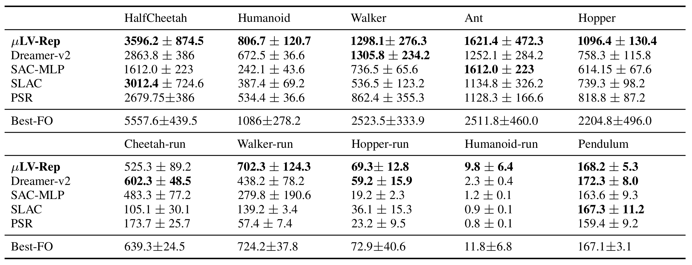
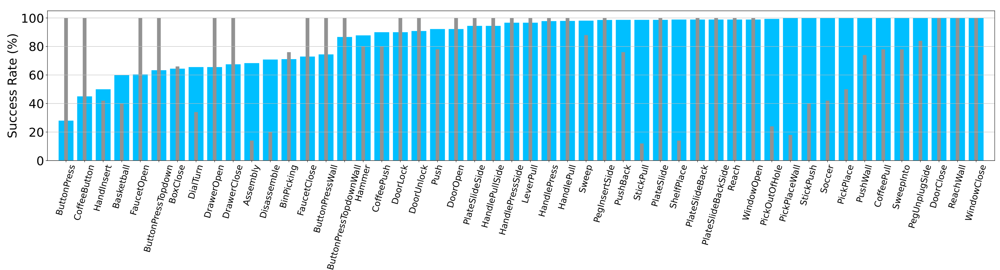
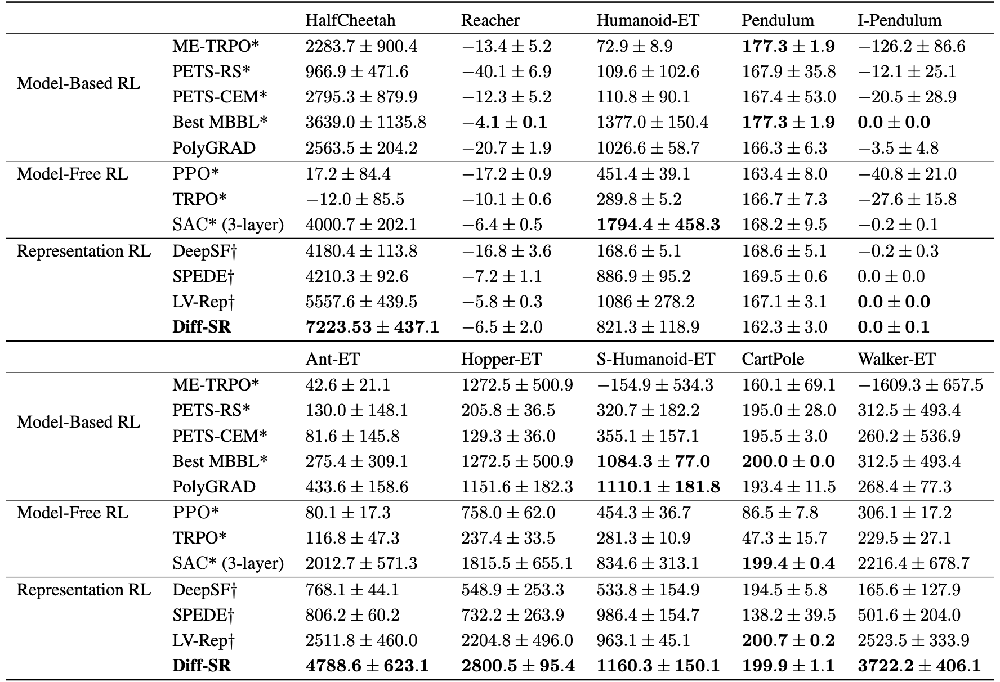
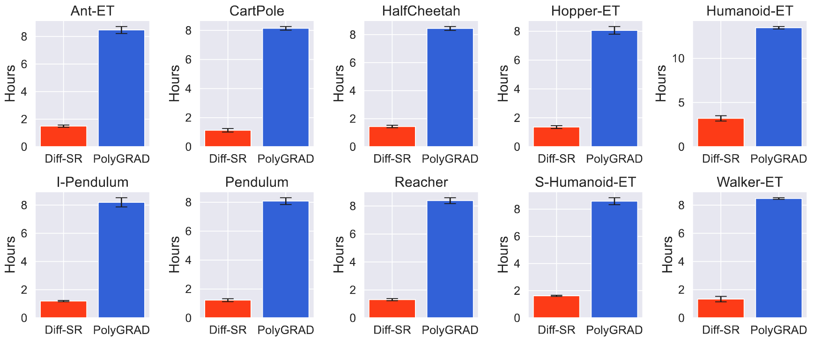
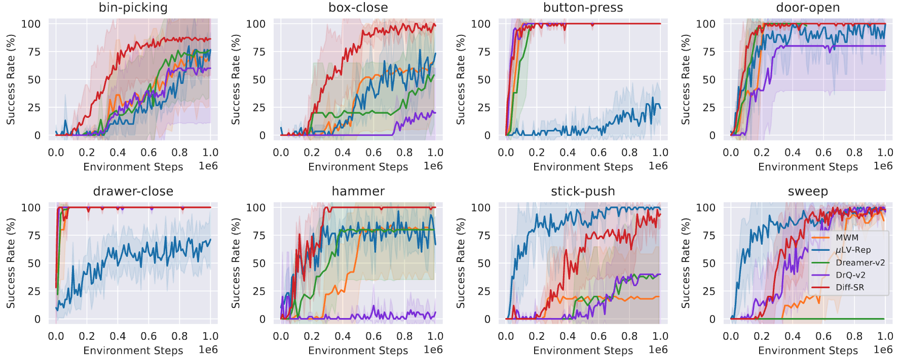

Introduction
Empirical successes have motivated investigation into structured POMDPs that allow some of the core computational and statistical complexities to be overcome, and provides an improved understanding of exploitable structure and practical new algorithms with rigorous justification. However, most works rely on the existence of an ideal computational oracle for planning, which, unsurprisingly, is infeasible in most cases, hence difficult to apply in practice. Although there have been a few attempts to overcome the computational complexity of POMDPS, these algorithms are either only applicable to the tabular setting or rely on an integration oracle that quickly become intractable for large observation spaces. This gap immediately motivates the question:
Can efficient and practical RL algorithms be designed for partial observations by exploiting natural structures?
By “efficient” we mean the statistical complexity avoids an exponential dependence on history length,
while by “practical” we mean that every component of learning, planning and exploration can be easily implemented and applied in practical settings.
In this paper, we provide an affirmative answer to this question. More specifically,
- We reveal for the first time that an -decodable POMDP admits a sufficient representation, the Multi-step Latent Variable Representation (μLV-Rep), that supports exact and tractable linear representation of the value functions, breaking the fundamental computational barriers;
- We design a computationally efficient planning algorithm that can implement both the principles of optimism and pessimism in the face of uncertainty for online and offline POMDPs respectively, by leveraging the learned sufficient representation μLV-Rep;
- We provide a theoretical analysis of the sample complexity of the proposed algorithm, justifying its efficiency in balancing exploitation versus exploration;
- We conduct a comprehensive empirical comparison to current existing RL algorithms for POMDPs on several benchmarks, demonstrating the superior empirical performance of μLV-Rep.
Experiments
We evaluate the proposed method on Meta-world, which is an open-source simulated benchmark consisting of 50 distinct robotic manipulation tasks with visual observations. We also provide experiment results on partial observable control problems constructed based on OpenAI gym MuJoCo.
Mujoco Benchmarks

Performance on various continuous control problems with partial observation. All results are averaged across 4 random seeds and a window size of 10K. μLV-Rep achieves the best performance compared to the baselines. Here, Best-FO denotes the performance of LV-Rep using full observations as inputs, providing a reference on how well an algorithm can achieve most in our tests.
The results clearly demonstrate that the proposed method consistently delivers either competitive or superior outcomes across all domains compared to both the model-based and model-free baselines. We note that in most domains, μLV-Rep nearly matches the performance of Best-FO, further confirming that the proposed method is able to extract useful representations for decision-making in partially observable environments.
Meta-world Benchmarks

Success Rate on 50 Meta-world tasks after 1 million interactions. The blue bars show our results, the gray bars show the best performance achieved by DreamerV2 and MWM. Our method succeeds on most of tasks (> 90% on 33 tasks). The results are better than or equivalent to (within 10% difference) the best of DreamerV2 and MWM on 41 tasks.
It is noteworthy that while MWM achieves comparable sample efficiency with μLV-Rep in certain tasks, it incurs higher computational costs and longer running times due to the incorporation of ViT network in its model. In our experimental configurations, μLV-Rep demonstrates a training speed of 21.3 steps per second, outperforming MWM, which achieves a lower training speed of 8.1 steps per second. This highlights the computational efficiency of the proposed method.
IV. Diff-SR: Diffusion Spectral Representation for Reinforcement Learning
Abstract
Diffusion-based models have achieved notable empirical successes in reinforcement learning (RL) due to their expressiveness in modeling complex distributions. Despite existing methods being promising, the key challenge of extending existing methods for broader real-world applications lies in the computational cost at inference time, i.e., sampling from a diffusion model is considerably slow as it often requires tens to hundreds of iterations to generate even one sample. To circumvent this issue, we propose to leverage the flexibility of diffusion models for RL from a representation learning perspective. In particular, by exploiting the connection between diffusion model and energy-based model, we develop Diffusion Spectral Representation (Diff-SR), a coherent algorithm framework that enables extracting sufficient representations for value functions in Markov decision processes (MDP) and partially observable Markov decision processes (POMDP). We further demonstrate how Diff-SR facilitates efficient policy optimization and practical algorithms while explicitly bypassing the difficulty and inference cost of sampling from the diffusion model. Finally, we provide comprehensive empirical studies to verify the benefits of Diff-SR in delivering robust and advantageous performance across various benchmarks with both fully and partially observable settings.
Introduction
Although diffusion models are powerful tools to represent complex, multimodal data distributions, its flexibility comes with a substantial inference cost: generating even a single sample from a diffusion model is notably slow, typically requiring tens to thousands of iterations. The computational demands are particularly problematic for RL, since the learning agent must frequently query the model for interactions with the environment.
In this paper, we exploit the connection between diffusion models and energy-based models (EBMs), and develop Diffusion Spectral Representation (Diff-SR), which leverages the flexibility of diffusion models by extracting representations that capture the dynamics structure. Specifically,
- We show that such diffusion-based representations are sufficiently expressive to represent the value function of any policy, which paves the way for efficient planning and exploration;
- We circumvent the need for sample generation from the diffusion model, and thus avoiding the inference costs associated with prior diffusion-based methods;
- Integrated with existing model-free policy optimization algorithms, Diff-SR demonstrates robust, superior performance and efficiency across various benchmarks.
Experiments
We evaluate Diff-SR with state-based MDP and image-based POMDP tasks to investigate the capability of Diff-SR comprehensively.
Gym-MuJoCo Benchmarks
The following table presents the performances of Diff-SR and baseline RL algorithms after 200K environment steps. Results are averaged across 4 random seeds and a window size of 10K steps. Diff-SR achieves significantly better or comparable performance to all baseline methods, including a diffusion-based method PolyGRAD in nearly all of the tasks.

Besides its superior performance, Diff-SR does not require sampling from the diffusion model while still leverages the flexibility of diffusion models. This leads to 4x faster training speed compared to other diffusion-based RL methods, as we observed in our experiments (see the next figure).

Meta-World Benchmarks
As the most difficult setting, we evaluate Diff-SR with 8 visual-input tasks selected from the Meta-World Benchmark. We see that Diff-SR achieves a greater than 90% success rate for seven of the tasks, 4 more tasks than the second best baseline μLV-Rep. Overall, Diff-SR exhibits superior performance, faster convergence speed, and stable optimization in most of the tasks compared to the baseline methods.

Citations
@misc{ren2023latent,
title={Latent Variable Representation for Reinforcement Learning},
author={Tongzheng Ren and Chenjun Xiao and Tianjun Zhang and Na Li and Zhaoran Wang and Sujay Sanghavi and Dale Schuurmans and Bo Dai},
year={2023},
eprint={2212.08765},
archivePrefix={arXiv},
primaryClass={cs.LG}
}
@misc{zhang2022making,
title={Making Linear MDPs Practical via Contrastive Representation Learning},
author={Tianjun Zhang and Tongzheng Ren and Mengjiao Yang and Joseph E. Gonzalez and Dale Schuurmans and Bo Dai},
year={2022},
eprint={2207.07150},
archivePrefix={arXiv},
primaryClass={cs.LG}
}
@misc{zhang2024efficient,
title={Provable Representation with Efficient Planning for Partially Observable Reinforcement Learning},
author={Hongming Zhang and Tongzheng Ren and Chenjun Xiao and Dale Schuurmans and Bo Dai},
year={2024},
eprint={2311.12244},
archivePrefix={arXiv},
primaryClass={cs.LG}
}